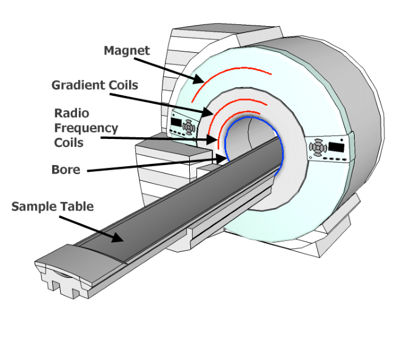

What is MRI?
Magnetic Resonance Imaging (MRI) is a powerful, non-invasive medical imaging technique that uses strong magnetic fields and radio waves to create detailed images of the body's internal structures. MRI does not use ionizing radiation like X-rays or CT scans.
How MRI Works
An MRI machine contains a very strong magnet that aligns the hydrogen atoms in your body. Radio waves are then sent to specific areas, causing these atoms to produce faint signals. These signals are detected by the MRI machine and processed by a computer to create detailed images.
Key Safety Considerations
- Strong Magnetic Field: The MRI machine's magnetic field is always on, even when not in use. It can attract metal objects with great force.
- Radio Frequency (RF) Energy: The RF pulses used in MRI can cause heating of the body, which is carefully controlled but must be considered for safety.
- Loud Noises: MRI machines produce loud knocking or buzzing sounds during operation. Hearing protection is provided to patients.
- Confined Space: The MRI bore (the tube where the patient lies) is a confined space, which can cause anxiety in some patients.
General Safety Rules
- Always inform MRI staff of any metal in your body, including implants, devices, or shrapnel.
- Remove all metal objects before entering the MRI room, including jewelry, watches, and clothing with metal fasteners.
- Never enter the MRI room with unauthorized equipment or objects.
- Follow all instructions given by MRI technologists and staff.
- Inform staff immediately if you experience any unusual sensations during the MRI procedure.